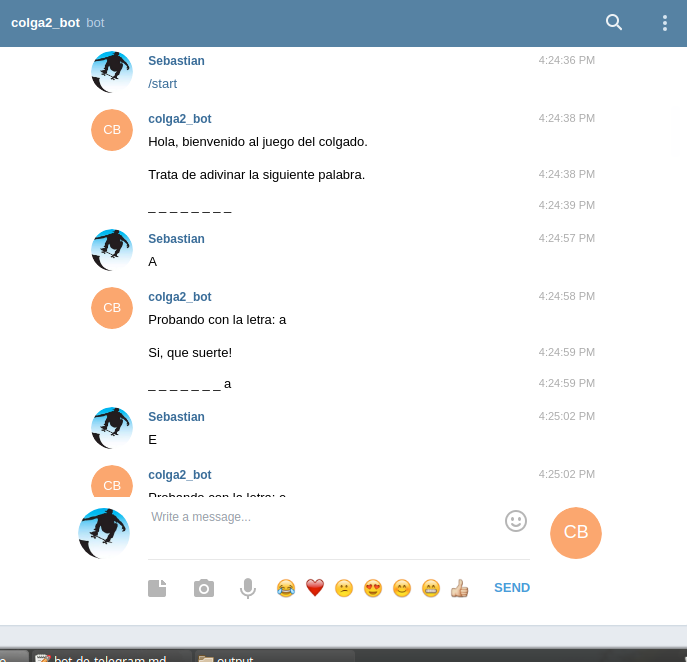

Bot de Telegram
El fin de semana estuve jugando con bots de telegram, influenciado por algunos comentarios en el team de Data Science y de algunos ejempos muy interesantes, como el asombroso https://telegram.me/py_uji_bot que recibe comandos de python y regresa la ejecución correspondiente. Así que me lancé manos a la obra a ver que tan difícil era y que podía aprender en el proceso. TLDR; es fácil y entretenid
El primer paso fue revisar la documentación en línea, y afortunadamente, existe bastantes ejemplos. En mi caso, encontré simple y funcional la librería que proporciona varios ejemplos y es bastate fácil de usar. Creo que hay otras por ahí, pero no podría decir mucho ni menos comparar. Usé esta y no me dió problemas.
Los pasos:
-
Hay que contactar al BotFather (brillante parodia del padrino/godfather), y pedir la creación de un nuevo bot. Para ello, hay que crear un nombre de usuario y un nombre del bot, y obtendras el token para comunicarte con el bot y el enlace que puedes compartir con el resto del mundo.
-
Hay que instalar una librería para que procese y conteste los mensajes que se reciben. En este caso, usando pyTelegramBotAPI. Por ejemplo, el siguiente código crearía un ambiente en conda especifico para telegram, activaría e instalaría la libreria (que se llama telepot en pypi).
conda create --name telegram source activate telegram pip install telepot
- Después de jugar y probar un rato, ya averigüe lo más básico: enviar un mensaje de vuelta a un usuario que te envio un mensaje (en python recibido en la variable
message).
chatid = message.chat.id bot.send_message(chatid, "Hola mundo.")
Para probar los conceptos, pense que algo entretenido era crear un juego de ahorcado (hangman) al que, cuando tu le enviaras una letra, te respondiera para permitir ir adivinando la palabra. El código más básico en el que pude pensar es el siguiente:
# Learn more library details at: https://github.com/eternnoir/pyTelegramBotAPI import telebot token = '' # Colocar aca el token recibido bot = telebot.TeleBot(token) # Parameters known_word = "" unknown_word = "_"*len(known_word) fail_count = 0 max_count = 6 # Replace def replace_letter(known_word, unknown_word, letter): new_unknown_word = "" for i in range(len(known_word)): if known_word[i]==letter: new_unknown_word += known_word[i] else: new_unknown_word += unknown_word[i] return new_unknown_word def formatted_word(word): return "".join(l+" " for l in word) def start_game(): global known_word, unknown_word, fail_count, max_count known_word = "mongolia" unknown_word = "_"*len(known_word) fail_count = 0 max_count = 6 # Handles all text messages that contains the commands '/start' or '/inicio'. @bot.message_handler(commands=['start']) def handle_start_help(message): global known_word, unknown_word, fail_count, max_count, success_count start_game() chatid = message.chat.id bot.send_message(chatid, "Hola, bienvenido al juego del colgado.") bot.send_message(chatid, "Trata de adivinar la siguiente palabra.") bot.send_message(chatid, formatted_word(unknown_word)) # usar la primera letra @bot.message_handler(func=lambda msg: True) def send_something(message): global known_word, unknown_word, fail_count, max_count chatid = message.chat.id if fail_count<=max_count: letter = message.text[0].lower() bot.send_message(chatid, "Probando con la letra: {}".format(letter)) if letter in known_word: bot.send_message(chatid, "Si, que suerte!") unknown_word = replace_letter(known_word, unknown_word, letter) else: fail_count += 1 bot.send_message(chatid, "No!!! Te quedan {} intentos".format(max_count-fail_count)) bot.send_message(chatid, formatted_word(unknown_word)) if unknown_word == known_word: bot.send_message(chatid, "Bravo, has adivinado!") bot.send_message(chatid, "Coloca /start para iniciar otro juego") else: bot.send_message(chatid, "Has perdido!") bot.send_message(chatid, "Coloca /start para iniciar otro juego") # Apply all bot.polling()
Lo anterior probablemente deja todavía un gran espacio a mejoras. En mi defensa, estaba viendo el partido de Brasil-Suiza con mi hijo que queria jugar INMEDIATAMENTE el juego :-)
Algunas mejoras inmediatas que se me ocurren, para una próxima versión:
Orientación a objeto, para evitar las variables globales y encapsular las acciones del juego.
Imprimir el resultado con la figura clásica del ahorcado. No hay que hacerle asco al ascii.
Tener un listado amplio de palabras, una de las cuales se selecciona al azar al colocar /start.
Mantener un listado de las letras ocupadas y no descontar si se usa nuevamente.
Responder con algo inteligente o bromista a algunas palabras o comentarios.
Enviar una imagen o sonido al finalizar el juego.
Sin embargo, el proceso fue muy entretenido, y además de permitirme una primera aproximación a bots en telegram, generó una interesante instancia de discusión con mi hijo: ¿Cuáles son las reglas del ahorcado? ¿Cómo podemos enseñarselas a un computador? ¿Cómo puede detectar el computador cuando se gana? ¿Y cuando se pierde? ¿Que hacer con la diferencia entre mayúsculas y minúsculas?

Esta versión no es suficientemente interesante como para dejarla en línea, pero quizás (un remoto quizás) ¡la próxima versión si esté disponible!